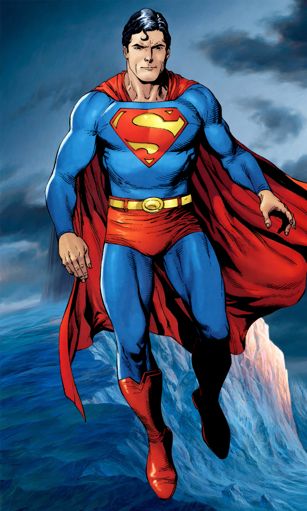

Born on the distant planet of Krypton, Kal-El was sent to Earth by his father to escape the dying planet's doom. The boy was found, adopted, and raised by a Kansas farm family. Through adoption, he recieved the name Clark Kent and inherited very strong morals. As a child, Clark developed amazing superhuman abilities such as x-ray vision, flight, and near-invincibility. In fact, his only weakness is Kyrptonite (radioactive meteorites of his destroyed home planet). Upon reaching adulthood, Clark decided to use his abilities to help mankind. While working as a journalist for The Daily Planet, Clark also assumed the identity of Superman, a hero for humanity.
Superman is a fictional character that is from DC Comic books. He is an American cultural icon and has been featured in everything from radio shows to video games. Some notable films include Christopher Reeve's 1978 Superman and the newer 2013 Man of Steel.
